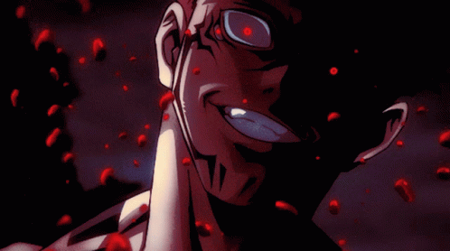
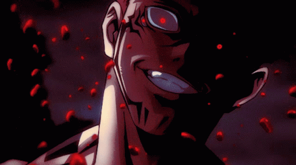

Acerca de Sukuna Ryomen
¡Bienvenido a mi pagina! Aquí, aprenderás más sobre Sukuna Ryomen
Ryomen Sukuna (両面宿儺 Ryōmen Sukuna?) (lit. Sukuna de la Doble Cara), más comúnmente conocido como Sukuna (宿儺 Sukuna?) es el antagonista principal de la serie manga Jujutsu Kaisen. Apodado Rey de las Maldiciones (呪いの王 Noroi no Ō?), fue el chamán más fuerte de hace mil años y actualmente una encarnación de objetos malditos de grado especial.
Historia de Sukuna
De acuerdo a la leyenda, Sukuna fue un demonio con apariencia humana que existió durante la era dorada del Jujutsu hace unos 1000 años, los hechiceros al perfeccionar sus habilidades pudieron derrotarlo. Después de su muerte, no fueron capaces de destruir su cuerpo y traspasó generaciones en forma de objetos malditos, representados en un total de 20 dedos. Sin embargo, años más tarde, durante el período moderno, Yuji Itadori termina en posesión de un dedo y lo ingiere en un intento de ayudar a las personas de su alrededor, como resultado, Sukuna logra encarnar en su cuerpo. Despues de su victoria contra Gojo Satoru, Sukuna se titula como el personaje mas poderoso de la obra, cosa admitida por el mismo Gojo satoru.
Galería


 
